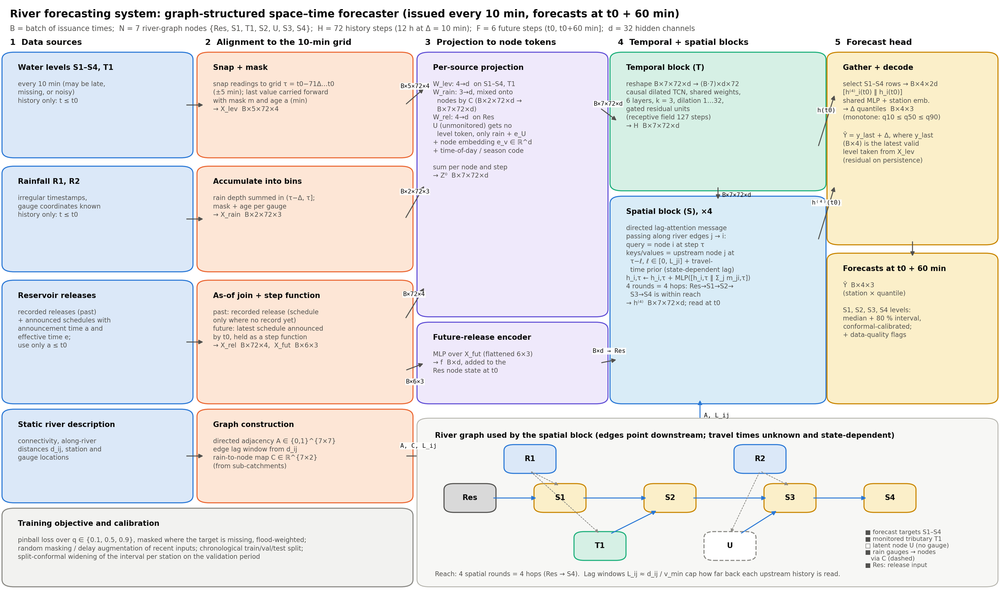

We propose a graph-structured space–time forecaster: a small neural network whose spatial connections follow the river (reservoir → S1 → S2 → S3 → S4, with tributaries joining at the right places). Each source is first aligned to one 10-minute grid, then a temporal block reads each location's recent history, and spatial blocks move information downstream with travel times that are learned and can change with the state of the river. Every ten minutes the system outputs, for each of S1–S4, the median water level one hour ahead and an 80% interval. The physics we are confident about (which way water flows, where tributaries join, that travel time grows with distance and shrinks at high flow) is built into the structure. What we are not confident about (exact lags, rainfall–runoff response, the unmonitored tributary) is learned from the historical record.

Supplied facts (taken as given, not assumed): F1 levels at S1–S4 and T1 every 10 min (historical); F2 rainfall at R1 and R2 with timestamps and gauge locations; F3 recorded reservoir releases, plus future release schedules with their announcement and effective times; F4 station locations, connectivity and along-river distances; F5 a monitored tributary (T1) joins between S1 and S2, an unmonitored one between S2 and S3; F6 precise travel times and the unmonitored inflow are not supplied, and travel times change with conditions; F7 future rainfall and future levels are unavailable at issuance.
| # | Assumption | Why it is reasonable | Effect on the design |
|---|---|---|---|
| A1 | At least 3–5 years of concurrent 10-min records, including several high-flow events. | Authorities that run gauges usually archive several years. Fewer than a handful of floods would make any learned model unreliable at the extremes. | Allows a model of roughly 105 parameters, a chronological train/validation/test split, and flood-weighted training. With a shorter record we would shrink the model and lean on the persistence-plus-routing fallback. |
| A2 | All timestamps share one clock (UTC); level readings are nominally on 10-min marks with at most ±5 min jitter. | Standard telemetry practice. | Readings are snapped to the nearest grid point. A reading outside ±5 min is treated as missing at that point rather than shifted further. |
| A3 | Reporting delays are usually under 10 min, but any gauge can occasionally be late by up to a few hours. Gauges report independently. | Typical of radio or cellular telemetry. | Each input carries a mask and an "age" feature. Training randomly delays recent inputs (Section 5). |
| A4 | Missing data are mostly short gaps (a few % of points) plus rare multi-hour outages. Bad values can be found by range, spike and flat-line checks. | Common failure modes of field sensors. | A quality-control step sets mask = 0 for flagged values. Masking augmentation teaches the model to fall back on neighbouring gauges. |
| A5 | Level sensors have about 1 cm noise and a fixed datum. Any datum or rating change is documented. | Required for any level-based forecast to be meaningful over years. | Levels are normalised per station with fixed statistics. A documented datum change is corrected before training. |
| A6 | Rain gauges report depth (tipping bucket or interval totals). R1 is representative of the upper catchment (local inflow to S1 and the T1 basin) and R2 of the unmonitored tributary and the area draining to S3. | Inferred from the gauge locations in the project setting. | Rain is summed into 10-min bins and mapped to nodes by a matrix C (7×2). C is initialised from this sub-catchment guess and then learned. |
| A7 | Releases are recorded as discharge (m³/s). Schedules are usually honoured, but actual releases may differ in timing or amount (gate operations, emergency spills). | Operational reality at dams. | The model is trained on the schedule as known at issuance and also sees recent schedule-versus-record deviation (Section 5 iv). |
| A8 | Dynamics: influence is downstream-dominant. Over one hour, backwater effects from downstream are small compared with upstream and local inputs. | The reach is a steep valley river (as illustrated). Flow is gravity-driven, so disturbances propagate mainly downstream. | Graph edges point downstream only. A station's own history still captures any slow local backwater effect. |
| A9 | Dynamics: travel time between neighbouring nodes is positive and bounded. It lies roughly between d/vmax and d/vmin with wave celerity v ∈ [0.3, 3] m/s, and it decreases as flow rises (kinematic-wave behaviour). | Standard open-channel hydraulics. Celerity grows with depth. | Each edge reads only a bounded window of upstream lags, Lji = ⌈dji/(vminΔ)⌉ steps (capped at H). The lag weights depend on the current state, so the model can shorten the lag at high flow. |
| A10 | Dynamics: over a one-hour horizon, levels are driven mainly by water that is already in the system: upstream flow, the release schedule, and rain that has already fallen. Rain falling after t0 barely affects main-river levels within the hour. | Rainfall-to-runoff lags for catchments of this size are typically longer than one hour. | No future-rain input is used. Rain falling now on small local areas is a residual risk, handled by wider intervals (Section 6). |
| A11 | The unmonitored tributary's inflow is correlated with recent R2 (and R1) rainfall. Its effect shows up first at S3 and then at S4. There are no other significant ungauged inflows or abstractions. | It drains the catchment where R2 sits. | A latent node U, fed only by rainfall, connects to S3. S3's own history captures how much the tributary is currently contributing. |
| A12 | Channel geometry, gauge ratings and reservoir operating policy are roughly stable over the record. Seasonal effects such as snowmelt in the mountainous headwaters are slowly varying. | Stability is needed for any data-driven model to generalise. The setting is alpine. | Inputs include a season code. The model is retrained periodically (e.g. quarterly) and monitored for drift. |
| A13 | Data arrive in an operational database within minutes. A standard CPU server is available. | Normal for a monitoring authority. | The model is a fully specified forward pass with no online optimisation (feasibility in Section 5). |
| A14 | Each station has a flood-warning threshold (or one will be supplied). | Flood preparedness is the stated purpose. | Used to up-weight high-water samples in the loss and for event-based evaluation. |
| Tensor | Dimensions | Axis meanings | Time coverage / timestamps |
|---|---|---|---|
| Level inputs Xlev | B×5×72×4 | batch (issuance times); gauge (S1, S2, S3, S4, T1); grid step; feature [normalised level, mask, age (min since the reading), 10-min change] | τ = t0−71Δ, …, t0; readings snapped to marks within ±5 min |
| Rain inputs Xrain | B×2×72×3 | batch; gauge (R1, R2); grid step; [depth in bin, mask, age] | bin τ covers (τ−Δ, τ]; from native timestamps ≤ t0 |
| Release history Xrel | B×72×4 | batch; grid step; [release in effect at τ, is-recorded flag (vs. scheduled), recorded − scheduled deviation, mask] | τ = t0−71Δ, …, t0; step function of effective times |
| Announced future release Xfut | B×6×3 | batch; future step; [scheduled release, has-schedule flag, minutes since announcement] | t0+Δ, …, t0+6Δ; only announcements with a ≤ t0 |
| Calendar code p | B×72×4 | batch; grid step; [sin, cos] of time of day and of day of year | same grid as the history |
| Static graph | A: 7×7, d: 7×7, C: 7×2 | node × node adjacency (downstream edges) and distances; node × rain gauge mapping | static |
| Latest valid level ylast | B×4 | batch; station S1–S4 | most recent unmasked reading ≤ t0 (its age is in Xlev) |
| Output Ŷ | B×4×3 | batch; station S1–S4; quantile (0.1, 0.5, 0.9) | valid at t0 + 60 min |
| Target Y, mask M | B×4, B×4 | batch; station | observed level at t0 + 60 min (training/evaluation only) |
Alignment across locations and sampling times. All sources are placed on one common grid of H = 72 time steps ending at t0, so step τ means the same physical time at every node. Levels are point samples and are snapped to the grid. Rainfall arrives at irregular times and is accumulated into each bin (τ−Δ, τ], which conserves rain depth. Releases are piecewise constant in time, so the release in effect at τ is read off a step function. Space is aligned through the graph rather than by interpolation. Each source is attached to a node (gauges to their own node, releases to Res, rain to nodes through C). Different feature sizes are made comparable by a per-source linear projection to width d. A source that has no observation at a node (for example U has no level) simply contributes nothing there.
Information available at issuance. Available: past levels at S1–S4 and T1, past rain at R1 and R2, past recorded releases, schedules announced by t0 (including effective times after t0), the static river description, and the calendar. Not available: any future level or rain, inflow from the unmonitored tributary, actual future releases, and readings that are still in transit. Training samples are rebuilt as of each historical t0 (using announcement times and, where logged, arrival times), so the model never learns from information it would not have in operation.
Notation. Nodes 𝒱 = {Res, S1, T1, S2, U, S3, S4}. Downstream edges ℰ = {Res→S1, S1→S2, T1→S2, S2→S3, U→S3, S3→S4}. 𝒩(i) is the set of upstream neighbours of i. xv,τ is the aligned feature vector of node v at step τ, d = 32, σ is the logistic function, and ‖ denotes concatenation.
(a) Projection to node tokens (diagram column 3):
Wsrc(v) is Wlev for S1–S4 and T1, Wrel for Res, and absent for U. ev is a learned node embedding.
(b) Temporal block (T): a causal dilated temporal convolution network with gated residual units. Weights are shared across nodes (the node identity enters through ev). For layers l = 0, …, 5 with dilation δl = 2l:
which gives hv,τ = z6v,τ. The block is causal (it never reads τ' > τ) and has a receptive field of 1 + 2·63 = 127 steps ≥ H. It captures each node's own dynamics: recession after a peak, rain accumulation, and the release pattern.
(c) Spatial block (S): lag-attention message passing, repeated for rounds r = 0, …, 3, with h(0) = h. Along each edge j→i, node i at time τ attends over upstream node j's states at lags ℓ = 0, …, Lji:
Here φ(ℓ) is a lag encoding. The second term is a travel-time prior centred on t̄ji = dji/v̄, with a learnable typical celerity v̄ and width sji, and Lji is the hard cap from A9. Because the query includes node i's current state (its level), the attention can move its weight to shorter lags when the river is high. This is how varying travel times are handled. Before round 0, the future-release embedding f = MLP(vec Xfut) is added to hRes,t0.
Reach. Each round moves information one hop downstream and up to Lji steps back in time. Four rounds cover the longest path Res→S1→S2→S3→S4. So every gauge, rain gauge and release can influence every downstream forecast, and the temporal block lets each node see all 72 steps.
(d) Forecast mapping. For station i ∈ {S1, …, S4}:
The model predicts a change from the latest valid level (σi is the station's level scale). With all weights at zero this reduces to persistence, which is already a strong baseline at one hour. The softplus gaps guarantee non-crossing quantiles.
(e) Training objective. We minimise a pinball (quantile) loss, masked where the target is missing and weighted towards flood conditions:
Training uses Adam, with early stopping on the validation period. The split is chronological (for example the first 70% of years for training, the next 15% for validation, the last 15% for testing), with a 13-hour gap at each boundary so windows do not overlap. After training, the 80% interval is widened by split-conformal calibration per station on the validation period, so its empirical coverage is 80%. We report MAE and pinball skill relative to persistence, interval coverage, and hit and false-alarm rates for threshold exceedance.
Why this design. (1) Graph instead of a flat vector: the river topology is known (F4). Hard-wiring it removes impossible dependencies (S4 cannot drive S1) and lets the one temporal block and one spatial block be shared across nodes, which matters with only a few floods in the record (A1). (2) T then S: a node's own history is summarised first, so each spatial message carries a rich, time-aware description of the upstream state. (3) Lag-attention instead of fixed lags: travel times are unknown and state-dependent (F6, A9). A fixed-lag graph convolution would bake in a single lag, whereas attention restricted to physically plausible lags learns them and can shift them with the flow, at negligible cost because each node has at most two upstream neighbours. Attention over all space–time tokens is not needed: the graph is tiny and the plausible paths are known. (4) Residual on persistence plus quantiles: these make the model degrade gracefully and give the committee the uncertainty they need for flood decisions.
How each driver reaches each forecast.
| Forecast | Upstream conditions | Tributaries | Rainfall | Reservoir releases |
|---|---|---|---|---|
| S1 | own history (T block) | — | R1 via C (local runoff) | 1 hop: past releases on the Res node, plus the announced future release f. The lag attention on Res→S1 picks the release that arrives in the next hour. |
| S2 | S1 history at learned lag (1 hop) | T1 history (1 hop) | R1 via T1 and S1 | 2 hops via S1 |
| S3 | S2 at learned lag; S1 and T1 at 2 hops | latent U (1 hop). S3's own recent rise shows U's current inflow. | R2 via U and C; R1 via upstream nodes | 3 hops |
| S4 | S3 at learned lag; further upstream nodes at 2–4 hops | U and T1 through S3 | R2 via U→S3→S4 | 4 hops; usually only relevant for long-lived release changes |
Physical assumptions versus learned mappings.
| Imposed by design (physical) | Learned from data |
|---|---|
| Flow direction and confluence locations (edges of A, A8) | How strongly each upstream node and rain gauge affects each station (attention values, MLPs) |
| Causality in time: no future level or rain inputs; the T block is causal | Travel times: lag weights α inside the plausible window, and their dependence on flow state |
| Travel time is positive, bounded, and grows with distance (Lji cap and the dji/v̄ prior, A9) | Rainfall–runoff response, including the U node's latent inflow, and the rain-to-node mapping C (initialised from A6) |
| Level continuity: the forecast is a change from the last level | Nonlinear stage response (rating-curve-like effects), seasonality, reliability of release schedules |
| The release schedule is an exogenous, known future input | Size and shape of the forecast uncertainty (quantile gaps) |
We deliberately do not run a separate hydraulic simulator. Without cross-sections, rating curves or travel-time studies (requested in Section 6) it would need its own calibration and would add more unverified assumptions than it removes. The physics enters through structure and priors instead.
(i) Missing observations. Quality control (range, spike, flat-line and rate-of-change tests) marks bad values as missing. A missing reading is replaced by the last valid value, with mask = 0 and its age, so the model knows it is stale. During training we randomly mask about 5% of points and drop whole gauges for 1–6 h, which teaches the spatial block to rely on neighbours: for example, inferring S2 from S1 and T1 when S2 is offline. If a target station's own level is missing, ylast is its last valid value. The model still forecasts it from upstream information, and the conformal interval is calibrated separately for "stale" cases, so it widens automatically. If two or more main-river gauges are out for over 3 h, the system switches to a fallback (persistence plus a lagged regression on the available upstream gauge) and flags the forecast as degraded.
(ii) Delayed observations. Forecasts are never held back waiting for data. At t0 + 2 min the model runs on whatever has arrived. Values not yet received are treated as missing with their true age, which is exactly how training was set up: delays are sampled from the empirical delay distribution, or from A3 if delay logs are not kept. Late data are included at the next issuance 10 minutes later. If late data change a forecast by more than a set tolerance (for example 5 cm), the current forecast is re-issued immediately with a "revised" flag.
(iii) Announced future releases. Schedules enter only through an as-of join. For every effective time e we use the most recent announcement with a ≤ t0, so later revisions replace earlier ones and nothing announced after t0 leaks in. The release in effect during (t0, t0+60 min] forms Xfut, which reaches S1 (and onwards) through the Res node and the lag attention. If a scheduled change takes effect after t0 but its travel time to S1 is longer than an hour, the attention simply puts no weight on it. The same as-of rule is used to rebuild historical training samples.
(iv) Scheduled versus actual releases. (1) The model is trained on schedules as known at issuance, not on what was actually released, so it learns how far schedules are typically honoured. (2) In the history window, the recorded release replaces the schedule as soon as it exists. The difference (recorded − scheduled) is an explicit input, so the model can discount a schedule that is not being followed. (3) If the recorded release deviates from the schedule by more than a tolerance, operators are alerted. The forecast is then run twice, once with the announced schedule and once with "current release persists", and both are published as a scenario band. Each run is a single forward pass, so this costs almost nothing. (4) S1's own level confirms the true release within its travel time, and all downstream forecasts correct automatically at the next issuance.
Feasibility of a 10-minute cycle. The network has roughly 105 parameters. One forecast costs about 4×107 multiply-adds in the T block (6 layers × 7 nodes × 72 steps × 3·32·64) and about 4×106 in the S block (4 rounds × 6 edges × 72 queries × ≤ 72 lags × 32). That is under 0.1 GFLOP, a few milliseconds on one CPU core. Even an ensemble of 5 models × 2 release scenarios takes well under a second. The cycle is dominated by data ingestion, quality control and alignment, which take seconds, leaving minutes of margin. Training is offline: about 5 years × 52,560 issuances per year is about 2.6×105 samples, which trains in minutes to hours on one GPU or CPU. We retrain quarterly and when drift monitoring triggers.
Uncertainty treatment. There are two sources. Aleatoric uncertainty is the irreducible variability given the inputs. It is represented by the predicted quantiles. Epistemic uncertainty is the model's own uncertainty, for example at floods larger than any in the record. It is estimated from the spread of an ensemble of 5 models trained with different seeds. The interval shown to users is the conformal-calibrated quantile interval, widened by the ensemble spread. Coverage is tracked separately for normal and flood periods.
| Uncertainty / limitation | Impact on forecasts | Our response / what remains unresolved |
|---|---|---|
| Unmonitored tributary (between S2 and S3) | Its inflow is unobserved, so sudden rises from local storms appear at S3, and then S4, with no upstream warning. Errors are larger at S3/S4 than at S1/S2, especially in convective rain. | Latent node U driven by R2 rainfall. S3's history reveals the current contribution. Intervals at S3/S4 are calibrated separately and are wider. Unresolved: the first part of a sudden tributary flood cannot be anticipated better than R2 allows. |
| Changing travel times | A wrong lag shifts the predicted arrival of a rise. Peak-timing errors matter most at high flow. | State-dependent lag attention within physically capped windows, plus flood-weighted training. Unresolved: floods beyond the observed range may travel faster than anything seen, so lags there are extrapolated. |
| Future rainfall (unknown at issuance) | Rain in the next hour on small local catchments (around S1 and S4) can raise levels within the horizon. | Not modelled (A10). Wider intervals when recent rain intensity is high. Fixed by request 2 below. |
| Only two rain gauges | Convective cells can miss both gauges, so rain-driven rises are under-predicted. | The learned mapping C and the node histories compensate partly. Radar data would fix this (request 2). |
| Release deviations / unannounced spills | An unannounced change propagates to S1–S4 without warning. | Scenario band and alerts (Section 5 iv). S1 detects the change within its travel time. |
| Rare extremes (few floods in the record) | The quantiles may be poorly calibrated exactly when it matters most. | Flood weighting, ensemble spread, coverage monitored separately for floods, and a persistence-plus-routing fallback for comparison. Needs request 6. |
| Sensor faults, datum or rating changes, drift | Systematic bias at one station that also contaminates downstream inputs. | Quality control, masking augmentation, and drift monitoring of each station's residuals against its neighbours. |
| Non-stationarity (channel changes, new operating rules, snowmelt regimes) | Performance degrades slowly over time. | Season code, quarterly retraining, and rolling evaluation. |
| Backwater near confluences (A8 violated) | Small level errors at S2/S3 during high tributary flow. | A station's own history partly captures it. Reverse edges could be added if residuals show a pattern. |
Additional information requests (in priority order; the system is designed to run without any of them):
| # | Request | How it helps | Usable without it? |
|---|---|---|---|
| 1 | A temporary or permanent level/flow gauge on the unmonitored tributary, or a rain gauge in its catchment | Turns U into an observed node, the single biggest improvement for S3 and S4 | Yes: U stays latent, with wider S3/S4 intervals |
| 2 | Weather-radar rainfall estimates and 0–2 h rainfall nowcasts | Captures rain the gauges miss and rain falling during the forecast hour | Yes: gauge rain only (A10) |
| 3 | Rating curves, channel cross-sections, any travel-time or tracer studies | Sharpens the travel-time prior and lag caps (A9). Would make a hydraulic-routing hybrid possible. | Yes: lags are learned within broad bounds |
| 4 | Telemetry metadata: data-arrival times, maintenance logs, quality flags, datum changes | Realistic delay and missingness simulation (A3, A4); removes known bad data | Yes: assumed delay and gap model |
| 5 | Reservoir operating rules, gate settings, and the history of schedule revisions and deviations | Better handling of schedule reliability and unannounced spills (A7) | Yes: reliability is learned from the record |
| 6 | Longest available historical record including past flood events, and the flood thresholds per station | More extreme events to train and calibrate on. Thresholds define the loss weights and evaluation (A1, A14). | Yes, but flood-time reliability is less certain |
| 7 | Air temperature and snow data for the headwaters; catchment boundaries (DEM) | Snowmelt contribution (A12); a better initial rain-to-node map C (A6) | Yes: season code and the learned C |